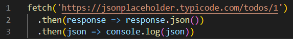
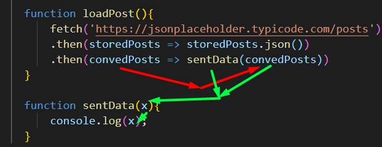
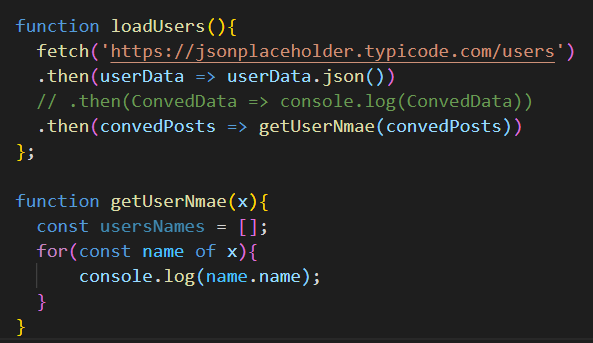

fetch দিয়ে কোন ডাটা-কে কোন server থেকে নেয়া হয় ।

এখানে ,
line 1. fetch('https://xyz.com') দিয়ে কোন site থেকে কোন ডাটা নিএয় আসছি ।
line 2. .then(response => response.json()) লিঙ্ক থেকে ডাটা নিয়ে সেটাকে convert করছি
line 3. .then(json => console.log(json)) তারপর converted data টাকে json এ স্টোর হবে এবং সেটা log হবে ।
fetch এর সাহায্যে কোন ডাটাকে নিয়ে সেটাকে convert করে চাইলে সেটাকে একটা function এর মধ্যে send করতে পারব ।

এখন যে object টাকে পেলাম সেটার মধ্য থেকে ইউজার দের নাম পেতে চাই তবে নিচের মত করতে হবে ।

এখানে click করলে user এর data গুলা page এ add হতে থাকবে ।